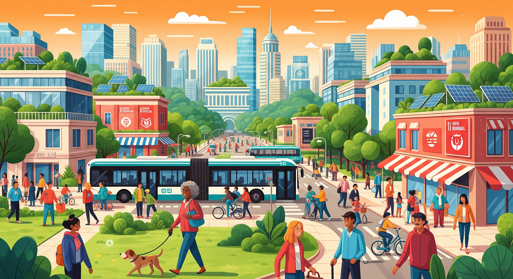

Objetivo 11: Ciudades y Comunidades Sostenibles
El Objetivo de Desarrollo Sostenible número 11 busca lograr que las ciudades y los asentamientos humanos sean inclusivos, seguros, resilientes y sostenibles.
¿Por qué es importante?
Más de la mitad de la población mundial vive en ciudades, lo que implica grandes retos como el acceso a viviendas dignas, transporte eficiente, servicios públicos y espacios verdes. Promover el desarrollo urbano sostenible mejora la calidad de vida de millones de personas.
Metas clave del ODS 11
- Asegurar el acceso de todas las personas a viviendas y servicios básicos adecuados y seguros.
- Mejorar la urbanización inclusiva y sostenible.
- Redoblar esfuerzos para proteger el patrimonio cultural y natural del mundo.
- Reducir significativamente el número de muertes causadas por desastres naturales.
- Proporcionar acceso a sistemas de transporte seguros, asequibles y sostenibles para todos.
¿Cómo puedes contribuir?
Desde elegir medios de transporte más sostenibles, participar en la planificación urbana o apoyar políticas públicas, cada acción cuenta para lograr ciudades más sostenibles y equitativas.